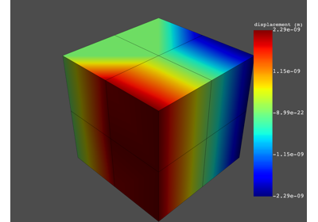
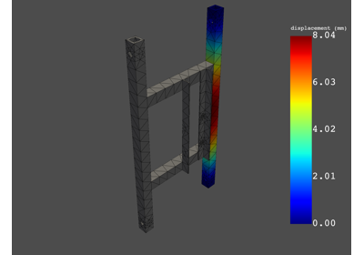
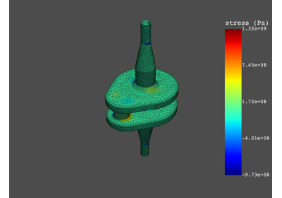
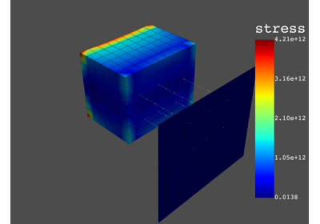
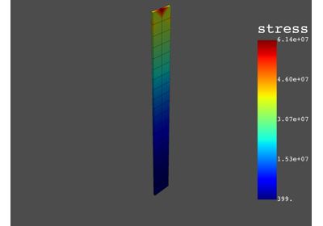

Examples#
End-to-end examples show how you can use PyDPF-Post. If PyDPF-Post is installed on your machine, you can download these examples as Python files or Jupyter notebooks and run them locally.
PyDPF-Post analysis types#
These examples show how to post-process different simulation types using PyDPF-Post.

Static Simulation
Modal Simulation
Transient Simulation with Animation
Transient Simulation with Animation
Harmonic Simulation
PyDPF-Post feature examples#
These examples show how you use PyDPF-Post features.

Extract results on named selections - Modal Simulation
Extract results on named selections - Modal Simulation

Explore the data of a result with the DataFrame - Harmonic Simulation
Explore the data of a result with the DataFrame - Harmonic Simulation

Extract stress/strain invariants - Static Simulation
Extract stress/strain invariants - Static Simulation

Export data contained in a DataFrame to a new format
Export data contained in a DataFrame to a new format

Extract cyclic results
Extract multi-stage cyclic results
Extract multi-stage cyclic results
PyDPF-Post legacy examples#
These examples show how you use the legacy PyDPF-Post API.

Get data from static simulation
Get data from static simulation



Modal analysis


Transient analysis